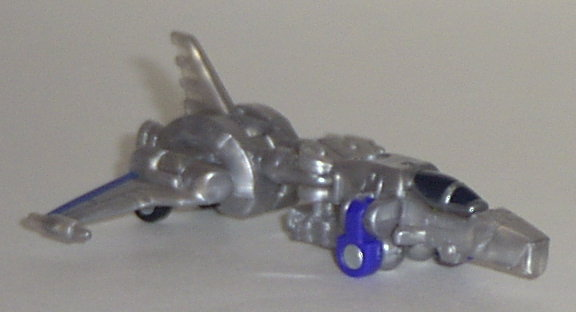
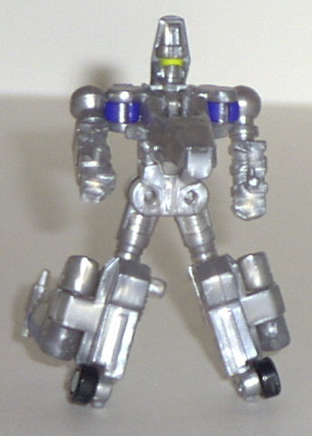
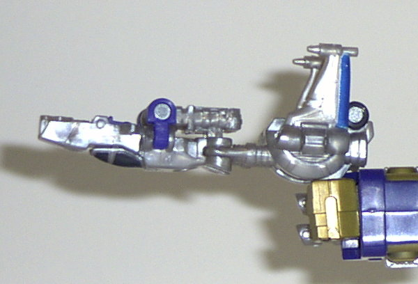
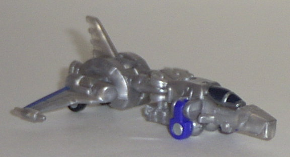
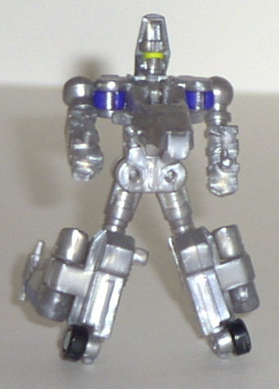
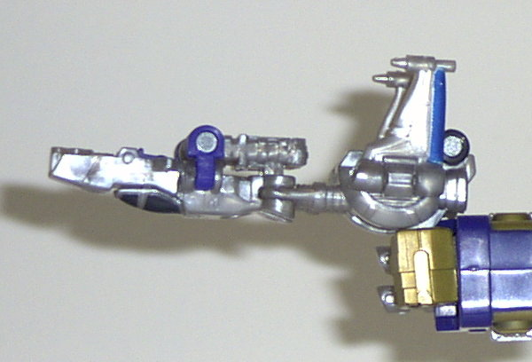
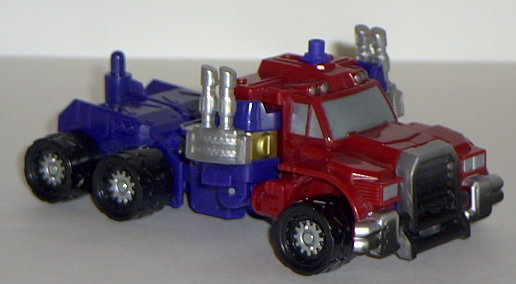
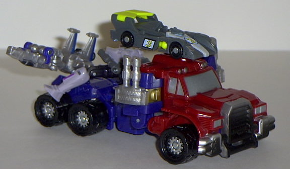
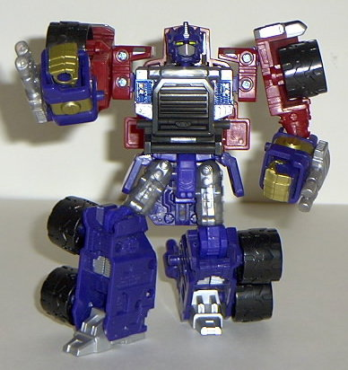

Over-Run
Over-Run
  
Allegiance : Minicon
Size : Mini-Con
Difficulty of Transformation : Very Easy
Color Scheme : Gunmetal gray and some dark shiny blue, dark flat blue, black, and bright yellow
Rating : 4.1
Over-Run



Allegiance
: Minicon
Size
: Mini-Con
Difficulty of Transformation
: Very
Easy
Color Scheme
: Gunmetal gray and
some dark shiny blue, dark flat blue, black, and bright yellow
Rating
: 4.1
Vehicle mode is a futuristic
space fighter. This mode is pretty cool- if you ignore the somewhat obvious
robot hands on the bottom, of course. The mold detailing is pretty nice,
with metallic panels, engines, and detailing where there doesn't really
have to be any. A little more paint detailing would have been nice, though-
just the windows and the back of the wings are painted in this mode. He
does have an itty bitty flip-out landing gear, though, so that almost makes
up for it. What really bugs me about this mode, though, isn't the mold
itself, but the placement of the Minicon port. It's on the top of the fighter!
Which basically means that he can only powerlink to larger Transformers
upside-down, and this looks kinds stupid. Grrr... Oh, and the Minicon symbol
is on the front of the nosecone.
Over-Run's robot mode
is... pretty bad. His paint detailing is really lacking- from a front-on
view, only the head visor has any paint on it- and the articulation is
horrible, even for a Minicon. The arms can move at the shoulders back and
forth, and the legs can move side to side at the hips (which is pretty
useless). That's it. Not to mention that his chest sticks out almost a
full inch from his body- and when you're this small, that's a lot. It looks
really weird from a side view. His face, although not bad, looks almost
comical, and reminds me of the Tin Man from
The Wizard of Oz
. So
you're basically stuck with a funny-looking, unposable Tin Man in this
mode.
Over-Run has a third
"gun" mode, and this is actually rather convincing. The nose cone actually
has a machine gun molded onto the bottom of it, and the wings on the back
actually look pretty cool. The robot hands still stick out rather obviously,
though.
Over-Run has a decent
vehicle and gun mode, but his robot mode is horrid. Why does Armada Prime
always get stiffed when it comes to Minicons? I mean, you'd think that
as commander of the Autobots, he'd just commandeer
Smokescreen
's
Minicon Liftor, or something....
 Optimus
Prime (Super-Con)
Optimus
Prime (Super-Con)


Allegiance
: Autobot
Size
: Super-Con
Difficulty of Transformation
: Easy
Color Scheme
: Gunmetal gray, dark
blue, black, brick red, silver, and some dull gold, dark shiny blue, and
bright yellow
Powerlinx ports
:
2 (1 gimmicked)
Rating
: 9.3
Vehicle mode is a futuristic truck- minus the trailer that Super Base Prime has. And, although this mode looks a little incomplete without it, it has the peg to hook up to Super Base Prime's trailer, if you want, which is kinda cool. (Although I don't think too many casual fans will pick up both the Super Base AND Super-Con versions.) Another neat bonus is that, although this version of Armada Prime can combine with anything else, this takes away the burden this combination ability has on his other modes- and, in this mode, means that he no longer has big honkin' fists sticking out the back of the truck. A huge plus, for sure. He also has a hole in the back of the truck where you can stick in Over-Run in gun mode, for a kind of "sentry" gunner! Nifty! The detailing- both paint-wise and mold-wise- is also excellent, and the proportions aren't quite as unrealistically chunky as they are in the Super Base version. My only real problem with this mode is, oddly enough, one of the main problems I had with the Super Base version's vehicle mode as well- those darn smokestacks come off too easily! And what really gets my goat is that there's no real reason for them to come off at all- they don't combine to form a gun, or anything! The intial releases of the toy had no Autobot symbol, but later releases in '03 on added on in the middle of his roof.

Robot mode is a thing
of beauty, man. It's amazing how much this toy has improved upon the same
overall design of the Super Base version, merely because of the removal
of the combination feature! The proportions are, again, much less chunky
and unrealistic, and the detailing is much better. (Although this version
of Prime is bereft of a Matrix... hmmm...) He also has the best articulation
out of any (non-Beast) Armada toy, bar none! He has head, shoulder (at
three points), elbow, waist, hip, knee (at two points), and foot articulation!
Pretty much every point you can reasonably expect is accounted for! This
allows you to get a ton of exciting poses out of him. However, this uber-articulation
does come at a price, albeit a small one. His Minicon gimmick is LAME-
he's one of the few toys in the Armada line that seems to have his Minicon
gimmick built around him, and not visa versa. By putting a Minicon on his
upper back port and pushing down, Armada Prime does a "double deuce punching
action"- although his arms actually just wiggle a millimeter. Oh, what
fun! I'll just skip that gimmick, thanks. Some people have also had a problem
with his fists sliding back into the arms too easily, but mine doesn't
have this defect.
Super-Con Prime has a pretty decent (if
slightly incomplete) vehicle mode, and one of the best robot modes in Armada.
Sure the gimmick is pretty lame, but he more than makes up for it in other
areas. Unless the combining gimmick really means that much to you, I'd
take this version over the more expensive Super Base version any day of
the week.
Review by Beastbot